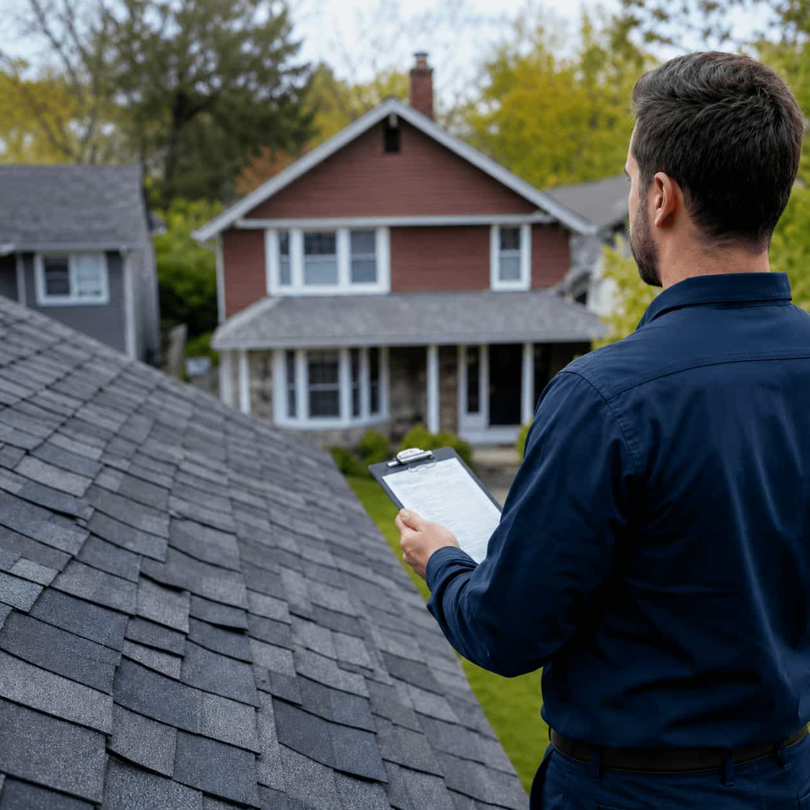

General roof condition
For homeowners who want a roof check before repair, replacement, or future planning.
Roofing Service
Compare local roofing professionals for roof condition checks, leak source review, storm concerns, buying or selling support, and repair or replacement planning.
What this service covers
Use this category when you are not sure what is wrong, want a condition check, or need a professional review before choosing repair, replacement, or storm damage service.
For homeowners who want a roof check before repair, replacement, or future planning.
For water stains, moisture concerns, or leaks where the source is not clear.
For suspected wind, hail, rain, or debris-related roof damage after severe weather.
For roof condition review before listing, purchasing, or negotiating home repairs.
For older roofs that may need repair planning, replacement discussion, or maintenance checks.
For homeowners deciding whether roof repair, replacement, or storm damage service fits best.
Common inspection reasons
Inspection may fit when you see signs of roof trouble but are not sure whether the next step is repair, emergency help, storm damage review, or replacement.
Start Inspection RequestWhy homeowners start with inspection
Inspection requests help homeowners compare local professionals when the roof issue is unclear, the damage may be hidden, or the right service category is not obvious yet.

Roof condition reviewInspection situations
Availability depends on independent local providers in your area. Include roof age, visible signs, recent storms, leaks, or real estate timing in your request.
Related problem guide
This guide is not a diagnosis. It helps homeowners choose a better starting category before submitting a quote-comparison request.
Roof inspection FAQ
Quick answers about using Roofen to compare local professionals for roof condition checks.
Inspection may fit when the roof issue is unclear, you see water stains, a storm recently passed, the roof is older, or you are deciding between repair and replacement.
Yes. If you see water stains, moisture, or a leak but the source is unclear, roof inspection can be a helpful starting category.
Choose emergency roof repair if water is actively entering or the issue cannot wait. Choose inspection when the issue needs review but is not immediately urgent.
Yes. You can submit a roof inspection request when buying, selling, preparing a home, or trying to understand roof condition before making decisions.
Yes. Submitting a roof inspection request through Roofen is free and does not create an obligation to hire a contractor.
Free request
Start a roof inspection request for condition checks, leak source review, post-storm concerns, real estate timing, or repair and replacement planning.